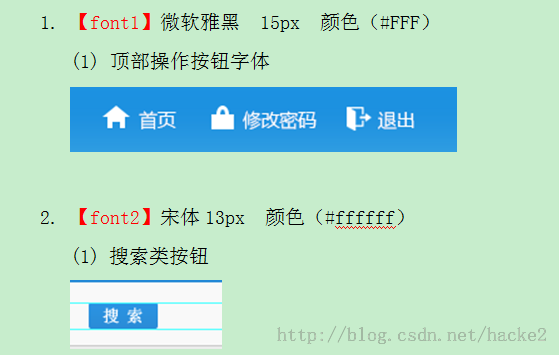
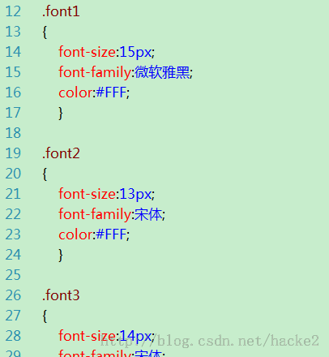
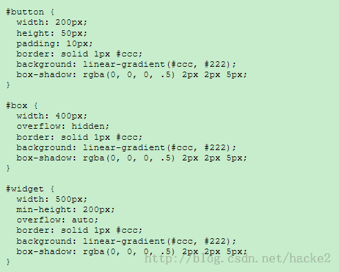
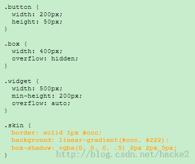
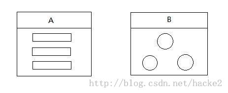
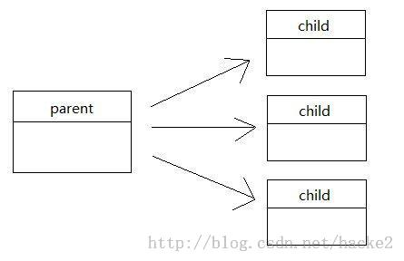
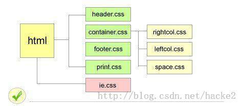

转载自http://blog.csdn.net/hacke2/article/details/21700073
- CSS的面向对象思想
2.1. 封装
2.2. 继承
2.3. 多态
2. CSS的面向对象思想
2.1 封装
封装字面上理解就是包装的意思，也就是尽可能的隐藏内部细节
比如我们要给一个元素添加CSS，之前在留学生教务系统里面，艾晓旭写了一个文档：留学生教务系统字体颜色规范。

后台开发者其实没必要每个人都在自己的页面里面加，也没有必要知道具体CSS的细节，比如怎么加字体样式，具体怎么加，
我们让艾晓旭直接就把这些字体颜色样式给封装好，我们不用知道里面具体是怎么写的，只要知道引用哪一个类就可以了

封装还有个要点就是不同的特性抽象到一个基于类的模块里
之前你每一个样式可能会这样写

如果抽取出共用的样式
由于一些长远考虑，我们抽象出一些公用的样式所以结果成这样：

下面是网上找的一些参考

<div class=”module-a”>
<h3>标题1</h3>
<p>描述文字</p>
</div>
<div class=”module-b”>
<h3>标题2</h3>
<ul>
<li>列表</li>
<li>列表</li>
<li>列表</li>
</ul>
</div>.module-a{.....}
.module-a h3{.....}
.module-a p{.....}
.module-b{.....}
.module-b h3{.....}
.module-b ul{.....}
.module-b ul li{.....}
.module-b ul li{.....}
.module-b ul li{.....}封装是实现CSS模块化的最基本要求，封装成的各个单元就是基本的CSS模块，可灵活用于组建页面的各种显示样式。
2.2 继承
什么是继承
在《Think in java》中有这样一句话：复用代码是Java众多引人注目的功能之一。继承最大的特点就是复用代码。
DIV CSS 继承是指我们设置上级(父级)的CSS样式，上级（父级）及以下的子级（下级）都具有此属性。
在留学生项目中的BASE.CSS

在这里定义后，每一次子级都继承了以上属性
如果想重写父级的CSS，根据优先级，后面定义的属性可以覆盖前面的在加一个一样的样式就可以覆盖父级的样式
可以只设置上级的CSS样式表属性，子级（下级）不用设置，
都有此CSS属性，可以减少CSS代码，便于维护。
下面是网上找的说明：

<div class=” module module-A module-A-a”></div>
<div class=” module module-A module-A-b”></div>.module {.....}
.module-A {.....}
.module-A-a {.....}
.module-A-b {.....}
.module-B {.....}
.module-B-a {.....}
.module-B-b {.....}继承可谓是CSS模块化的关键所在，由于html元素可以拥有多个类，而且根据优先级，后面定义的属性可以覆盖前面的，
正因为这样，继承这个特性发 挥了巨大的作用。对于某些多数样式属性相同，仅有几个不同样式属性的定义，可以用这个方法来实现。
也可以在不改变某个通用样式类的同时，用HTML调用复合类，突出局部特例。
2.3 多态

<div class=”module-A”></div>
<div class=”part-A ”>
<div class=”module-A”></div>
</div>
<div class=”part-B ”>
<div class=”module-A”></div>
</div>
<div class=”part-C ”>
<div class=”module-A”></div>
</div>.module-A {.....}
.part-A .module-A {.....}
.part-B .module-A {.....}
.part-C .module-A {.....}多态主要用于同一模块在页面的不同部分或者不同页面之间呈现出不同的样式。对于CSS的多态，一个很经典而且常用的例子就是导航栏。
我们知道，导航 栏往往需要标识出当前页面所在的导航链接。也就是说，对于导航栏的链接，通常有两种形态，一种是常态，一种是高亮态，
比如处于主页时，主页的链接就是高亮 态的，其他导航链接是常态的。这个时候，很多人喜欢在li上加上一个current类，用来把该导航链接设置为高亮态，
但是我觉得这种方式并不理想。
为什么呢？因为对于结构一样的导航栏，后台人员在处理时，往往是抽出成一个公共结构，然后各个页面都引入这个结构。这对于后期的维护是相当有效的，
因为涉及导航栏的修改仅需修改一次即可，如果不这么做，那么修改的次数将会等于页面的个数，而且容易出错。对于这种情况，多态就可以很好地解决，
因为我们 可以在每个页面的body（或者其他地方）加上一个类来标识不同的页面（此类可以不定义任何样式）。那么，根据多态的特性，
我们就可以为不同页面的导航设置不同的形态，同时又保持了导航链接的结构一致性。举例如下：
主页：
<body class=”index”>
<ul class=”nav”>
<li class=”index”><a href=”#”>主页</a></li>
<li class=”page1”><a href=”#”>内页1</a></li>
<li class=”page2”><a href=”#”>内页2</a></li>
</ul>
</body>
内页1：
<body class=”page1”>
<ul class=”nav”>
<li class=”index”><a href=”#”>主页</a></li>
<li class=”page1”><a href=”#”>内页1</a></li>
<li class=”page2”><a href=”#”>内页2</a></li>
</ul>
</body>//定义常态
.nav{.....}
.nav .index{.....}
.nav .page1{.....}
.nav .page2{.....}
//定义高亮态
.index .nav .index{.....}
.page1 .nav .page1{.....}
.page2 .nav .page2{.....}这个就是多态的经典应用之一。
补充部分
以上的这种对导航的处理办法不太好，因为导航是一个公用组件，所谓公用，就是应该结构和样式都是公用的，上面的那种方法没有做到样式上公 用，
因为很明显定义高亮态那里需要用到其他页面的样式类，而且joe哥提到可移植性的问题，如果这个导航搬到其他地方，
那么就需要为新的页面的body全 部都添加一个类（这个我真没想过导航还可以给多个网站重用，我眼光太短浅了）。那么，究竟什么做才是比较主流的呢？
加current，没错，就是加 current，这个被我一开始就否决的方法。那么又回到原来的问题，既然我们是引入同一个导航文件，那么current能加到哪里呢？
其中一个被我们都忽略了的方法，脚本！可以是js，可以是php，原来我们可以动态添加current类到导航去，惊讶吧！
好吧，我承认我有点过于兴奋了，大伙儿看例子吧~
<ul class=”nav”>
<li class=”index” id="index"><a href=”#”>主页</a></li>
<li class=”page1” id="page1"><a href=”#”>内页1</a></li>
<li class=”page2” id="page2"><a href=”#”>内页2</a></li>
</ul>//定义导航的样式
.nav{.....}
.nav li.index{.....}
.nav li.page1{.....}
.nav li.page2{.....}
//定义高亮态
.nav li.current{.....}function addCurrent(class,html_id){
//class为增加的样式类名，html_id为需要增加样式类的html元素的id
document.getElementById(html_id).addClass(class);
//这里的class就是‘current’，addClass方法的实现我这里就不多说了，你可以用jquery或者别的，甚至自己写
}这种做法对于不同的页面，或者新增的页面，只需改js的一个参数即可，做到了把导航部分真正实现模块化、组件化，公用的部分就应该公用到底，不留一 点余地。
不过我还想说一点是，如果你的current（高亮态）不是单独的换个背景颜色之类的，而是用雪碧图这类的方法，每个导航链接的current类 都是不同的，
那么以上的这种方法，貌似还有待改进。
事实上应该指出，我这里讨论的只是CSS模块化的一部分，可以说是比较微观的一部分。还有一些对CSS进行比较宏观地划分模块的说法，比如按页面来划分，
一个页面或者说一个区域为一个模块，比如像“幸福收藏夹”上所说的划分方法：

网站的划分标准更大一些，是以网站的专题为模块，不幸的是，很多专题的页面风格都是类似的，导致各个模块间存在大量的冗余代码，这意味着对样式的改动将会相当麻烦，
一个地方的改动需要同时修改多个css文件。
表面上看，虽然对CSS模块划分得细是一个不错的想法，但并不是越细越好。现在的一些开源系统，如dedecms（织梦——PHP开源网站内容管理系统），
甚至说YUI框架的1.0版本， 都流行一种做法，就是把CSS模块细分成单属性，比如把宽度960px定义为.w960，把清除浮动定义.clear，把字体绿色定义为.green等 等。
这样做的好处是可以对页面元素的样式进行快速组装，通过引入多个类便可以达到我们想要的效果。但是，这样的做法会导致另外一个问题。大家想，
这么做 与内联样式有什么区别？如果有一天，我们想要把多个地方的字体颜色由绿色改为红色，那么我们要做的不是改动css的color属性，
而是把这些html元 素的class都由green改为red。请注意，我们的初衷是改变的页面表现，但最终我们需要改变结构来达到我们的目的，这样就做不到结构与表现的分离 了。
究竟怎么样划分CSS模块，又怎么来用这些模块来组建页面元素才是合适，其实很难找到一个标准，这不仅需要结合具体的页面要求，还需要一定的经验。
总结：面向对象是一种思路，或者说是一种方法论，给CSS重构带来一些启示，这就足够了，没有必要去纠结OO CSS的定义和严谨性